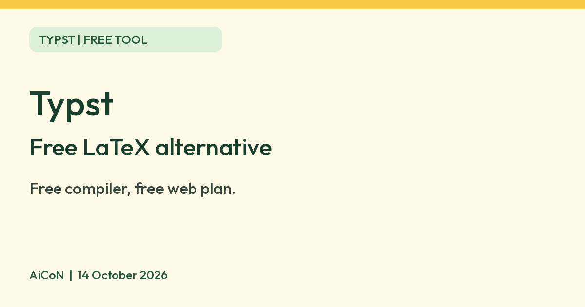

Typst: a free LaTeX alternative, and what it does better
Typst says it is a faster, simpler way to write papers, reports and CVs. The compiler is free and open source, and the web app has a free plan.

What it is
Typst is a tool for writing documents such as papers, reports, theses, CVs and letters. You write plain text with simple markup, and Typst turns it into a PDF. Its homepage calls it "the new foundation for documents" and lists specifications, reports, theses, presentations, research papers, maths-heavy documents, books, CVs, letters, invoices and proposals. The official guide describes it as a markup-based typesetting system like LaTeX, but "not built upon LaTeX" and with a different syntax. It is not an AI tool. We included it because it is a free tool from an official source.
Is it free?
Partly, and the two parts are different.
- The compiler is free and open source. It is a command-line tool under the Apache-2.0 licence on GitHub. The Typst homepage says it is open-source software with 400+ contributors. It turns Typst markup into PDFs, images and web pages.
- The web app has a free plan. The docs say many features of the web app are free and only an account is required. The pricing page lists the free plan as 200MB storage and up to 100 files per project. The web app itself is not open source.
- There is a paid Pro plan. The pricing page lists comments on projects, private packages and templates, GitHub and GitLab sync (marked experimental), Zotero and Mendeley sync, invite by email, presentation tools, folders, and 2GB storage with up to 1,000 files per project. We have not verified a price in rupees, so we are not quoting one.
The advantages Typst says it has
These come from Typst's own homepage, docs and pricing pages. We did not test them.
- Simple markup. Headings, lists and common tasks use short syntax like Markdown, for example "= Introduction" for a heading and a hyphen for a bullet. The guide says lists "do not rely on environments", unlike LaTeX.
- Fast previews. The guide says compilation "usually takes milliseconds, not seconds", so the web app and the compiler can show an instant preview. This is Typst's claim. We did not benchmark it. A customer quote on the pricing page says a 2000-page contract note takes about 1 minute in Typst against 18 minutes in LuaLaTeX. That is a testimonial, not a test we ran.
- Many things built in. The guide says Typst is "batteries included", so the equivalent of many popular LaTeX packages is built in. The homepage lists maths, tables, code listings, bibliographies, slides and visualisations.
- Templates. You can pick a template or write your own. The homepage shows examples such as an internal report, a scientific journal article and a newsletter. The guide says custom templates are "shorter and more readable than the corresponding LaTeX .sty files by orders of magnitude".
- Packages. Typst has its own package site, Typst Universe, which the guide compares to CTAN. Packages and templates download automatically the first time you use them.
- Scripting. You can write functions in your document to style and automate content. The guide says Typst functions are "pure", unlike LaTeX macros, which can have arbitrary effects.
- Live preview and teamwork. The docs say the web app has an editor with live preview and real-time sync with co-authors.
- Several outputs. The homepage says you can export a PDF, an image or a website (the website export is labelled preview).
- A lean local install. The guide says the compiler is a single small binary that any user can run, without root privileges, and that you can use your own editor and keep files where you like.
What Typst does not do yet
- It is not a drop-in LaTeX replacement. The guide says "Typst can be a LaTeX replacement for many today", but there are features it does not yet support.
- The guide says its plotting ecosystem does not yet match the breadth of PGF/TikZ, although the cetz package "is catching up quickly".
- The guide says changing page margins in Typst forces a page break, unlike LaTeX.
- It uses its own syntax, so your existing LaTeX files and packages do not run as they are. We did not test importing .tex files.
Official videos
Typst's own YouTube channel is linked from its website (typst.app/socials). We did not watch these in full.
- Typst Meetup 2026: Keynote, by Typst co-founder and CEO Martin Haug, who says he and co-founder Laurenz studied computer science at TU Berlin and used a lot of LaTeX.
- Typst Feature Drop: What is new in the web app (5 min 40 s, June 2025).
We link the videos instead of copying them.
Which devices
- The web app runs in a browser. You need an account.
- The compiler is a command-line tool. The GitHub page gives install commands for macOS (Homebrew) and Windows (winget), and pre-built downloads for several platforms. We did not check Linux details.
- We found no official Android or iOS app. We did not test how the web app works on a phone.
Privacy and data
- Typst's privacy policy says projects and files are stored in the Microsoft Azure Cloud in data centres within the European Union, encrypted at rest with a Microsoft-managed key. That is not end-to-end encryption. The pricing page says the web app data is stored in Germany.
- The policy says telemetry from the web app goes to its partner Mixpanel only if you opt in, and that this includes a unique user ID and your display name.
- It says the website uses Plausible analytics with a browser fingerprint discarded 24 hours after your visit, and that you can opt out.
- Using only the local compiler keeps your files on your computer. The guide says packages download when first used and are then cached.
India
- We found no India-specific statement or age limit on the pages we read. The Typst homepage lists the Indian company Zerodha among organisations that trust Typst. That is a claim on its site, not something we checked.
Frequently asked questions
Is Typst free?
The compiler is free and open source. The web app has a free plan and a paid Pro plan.
Does it replace LaTeX?
Not for everything. Typst's own guide lists features it does not yet support.
Is it AI?
No. It is a document tool. We included it because it is a free tool from an official source.
Sources: Typst, Pricing, Guide for LaTeX users, Web app docs, Privacy, GitHub, Typst socials. Checked 14 October 2026.
Logo: Typst wordmark from typst.app. Typst's brand guidelines (typst.app/legal/brand/) say you are free to use its name and logo to refer to its web app and compiler, and that commercial uses need its authorisation. Independent guide, not affiliated.